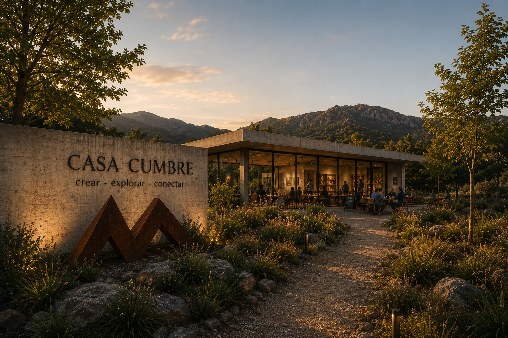
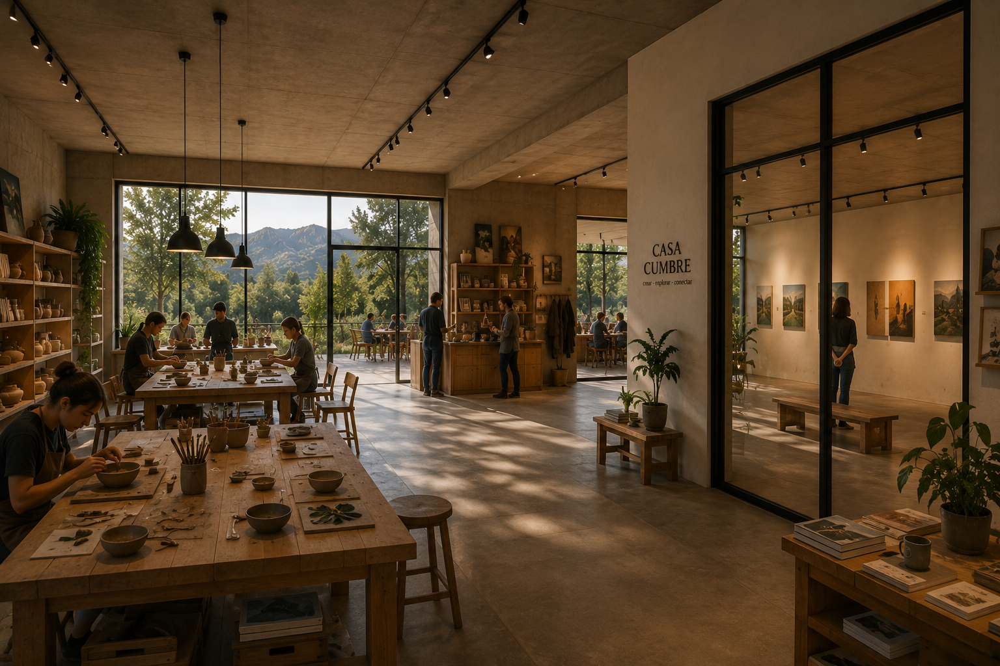
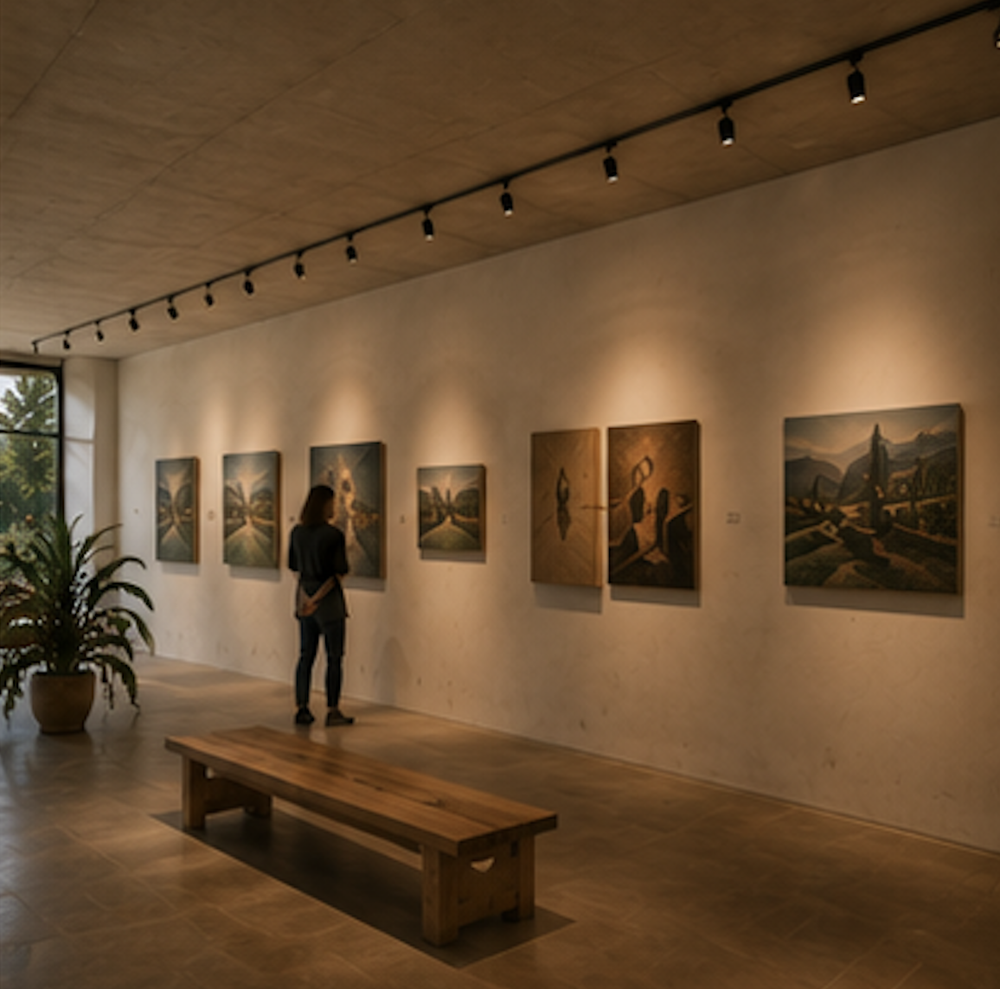
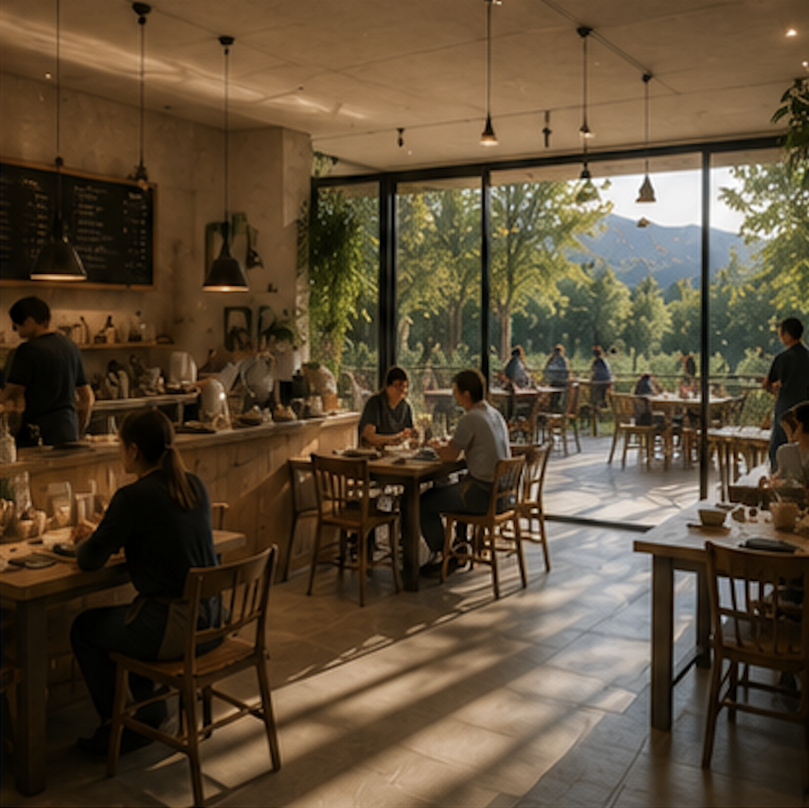
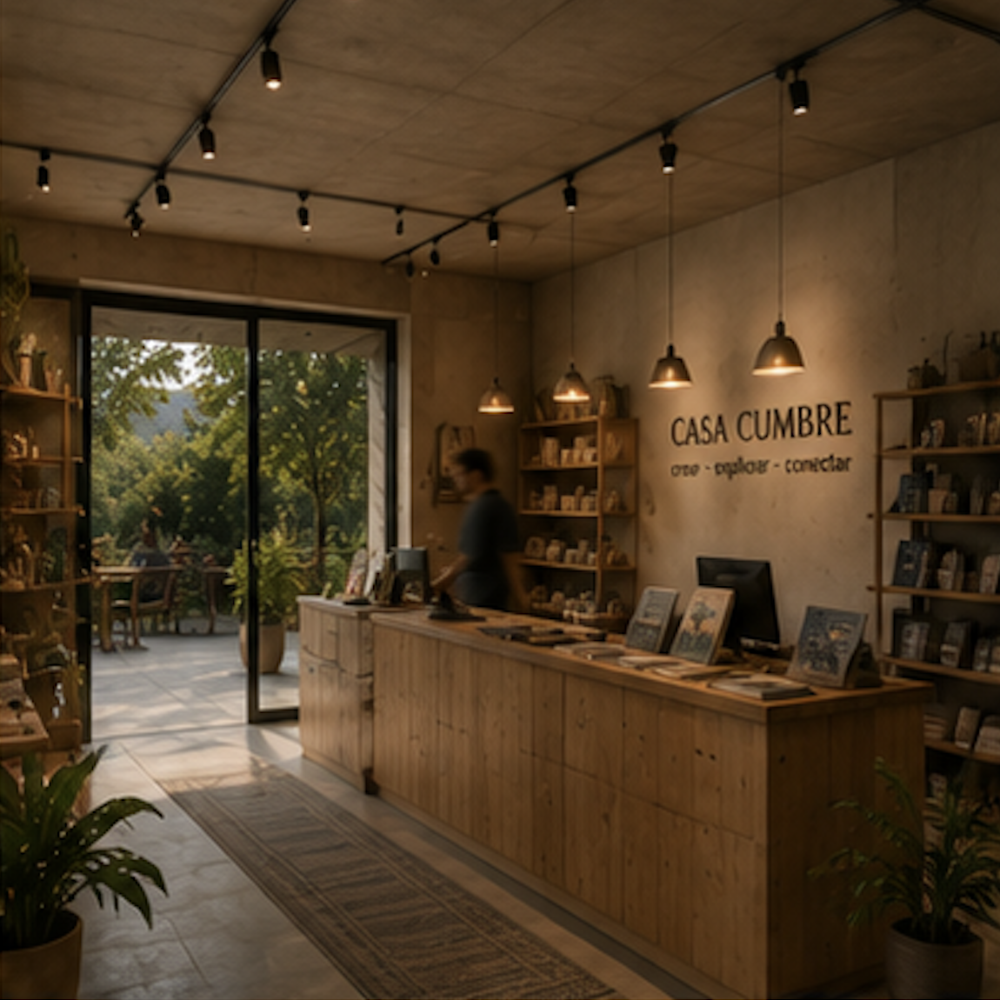
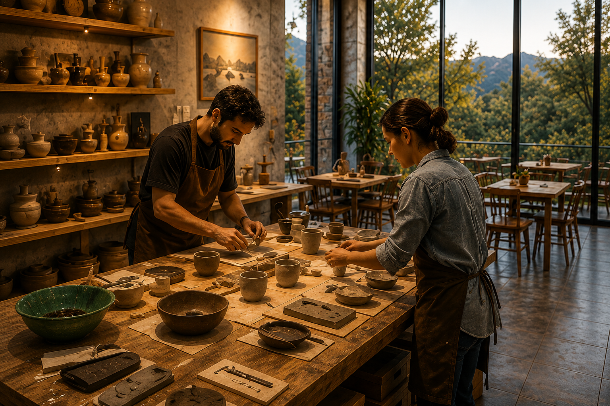

QUÉ ES CASA CUMBRE
Casa Cumbre es un espacio cultural ubicado en las sierras de Tandil que combina arte, naturaleza y comunidad en una experiencia participativa y contemporánea. Nace como un club creativo abierto donde las personas pueden crear, explorar y conectar a través de talleres, exposiciones, eventos, visitas guiadas y encuentros culturales. Su propuesta integra un taller laboratorio, una galería de arte, un anfiteatro al aire libre, un café y un patio de esculturas, generando un entorno cálido, accesible e inspirador.
El proyecto busca responder a la necesidad de contar con espacios culturales más vivos, cercanos y experienciales fuera de los grandes centros urbanos. Casa Cumbre propone una agenda dinámica que incluye cerámica, collage, fotografía, música acústica, cine, charlas y ferias, invitando a que el público no solo observe el arte, sino que también participe de él. Con una identidad rústica y contemporánea, el espacio se posiciona como un punto de encuentro donde creatividad, paisaje y comunidad conviven de manera natural.
ESPACIOS DE CASA CUMBRE









DIRECCIÓN
Paraje La Cumbre, Tandil, Buenos Aires
HORARIOS
Martes a domingos · 10 a 20 hs
ENTRADAS
Entrada general: $4000
Jubilados: $2500
Menores de 12 años: gratis